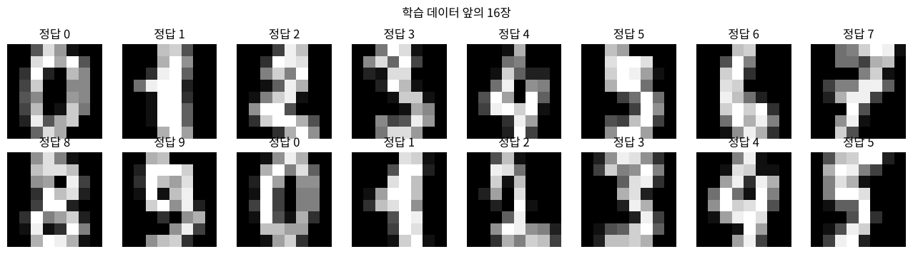

제 11 편
MNIST - 손글씨 숫자를 읽는 신경망#
근거 자료: 박성호, 「Deep Learning (IV) - MNIST (필기체숫자) 인식」 (ML_LEC_22)
학습 목표#
MNIST 데이터의 구조(정답 1개 + 픽셀 784개)를 이해하고 이미지로 나타낼 수 있다.
입력 정규화와 원-핫 인코딩(one-hot encoding)의 의미를 설명할 수 있다.
784 - 100 - 10 신경망의 구조를 알고, 수치미분으로 학습할 때의 문제점(시간)을 직접 확인한다.
지난 시간 복습#
제 10편: 입력층 → 은닉층 → 출력층 으로 피드포워드하고, 손실을 줄이도록 모든 W, b 를 학습시켜 XOR 을 풀었습니다.
오늘은 같은 방법을 진짜 손글씨 숫자 사진 에 적용합니다.
핵심 정리#
① 사진은 784 차원 벡터
28 × 28 흑백 사진의 픽셀 값(0 ~ 255) 784 개를 한 줄로 펴면 x = (x₁, x₂, … , x₇₈₄) 이다. (아래 애니메이션 1)
② 정규화
x′ = (x / 255) × 0.99 + 0.01 → 0.01 ≤ x′ ≤ 1
입력이 크면 z = x · W + b 가 커져 e−z 계산이 불안정해지므로 범위를 맞춘다.
③ 원-핫 인코딩과 argmax
정답 5 → (0.01, 0.01, 0.01, 0.01, 0.01, 0.99, 0.01, 0.01, 0.01, 0.01)
출력 노드 10 개 중 가장 큰 값의 위치(argmax)를 답으로 고른다. (아래 애니메이션 2)
④ 784 - 100 - 10 신경망의 크기
W(2) 784 × 100 + b(2) 100 + W(3) 100 × 10 + b(3) 10 = 79 510 개
⑤ 수치미분의 비용
값 하나를 수치미분하려면 피드포워드를 2 번 해야 한다. 사진 1 장으로 한 번 학습하려면 피드포워드를 약 2 × 79 510 = 159 020 번 해야 하고, 30 000 장이면 수십 시간이 걸린다.
→ 미분을 한꺼번에 공식으로 구하는 오차역전파 가 필요하다.
코드로 직접 해 보려면 : 페이지 위쪽 로켓 버튼 → Colab 을 누르세요. 값을 바꿔 가며 실행하고, 연습 문제의 정답도 코랩에서 확인합니다. 처음 열면 파일 → Drive에 사본 저장 부터 하세요.
개념 다지기 1. MNIST 란?#
사람이 손으로 쓴 숫자 0 ~ 9 의 흑백 사진 모음 (학습용 60,000 장, 테스트용 10,000 장)
프로그래밍을 배울 때 처음 출력하는 ‘Hello, World’ 처럼, 딥러닝을 배우면 처음 해 보는 데이터
사진 1장 = 가로 28 × 세로 28 = ( ) 개의 숫자 (0 = 검정 ~ 255 = 흰색)
원본 강의의 mnist_train.csv 는 한 줄에 숫자가 785 개 있습니다.
1열 |
2열 ~ 785열 |
|---|---|
정답 (예: 5) |
숫자 5 의 사진을 이루는 픽셀 값 784 개 |
[확인 1] training_data 의 형상은 ( × ) 이다. 행 하나 = 사진 ( ) 장이다.
애니메이션 1. 784 개의 숫자가 사진이 되는 과정#
한 줄로 늘어선 784 개의 픽셀 값을 28 개씩 끊어서 한 줄씩 쌓으면 (reshape(28, 28)) 사진이 됩니다.

개념 다지기 2. 신경망 설계 (784 - 100 - 10)#
층 |
노드 수 |
이유 |
|---|---|---|
입력층 |
784 |
픽셀 784 개를 하나씩 받는다 |
은닉층 |
100 |
정해진 규칙 없음 (임의로 100) |
출력층 |
10 |
정답이 0 ~ 9 중 하나이므로 숫자마다 노드 하나 |
W2 : (784 × 100), b2 : 100, W3 : (100 × 10), b3 : 10 → 학습할 값이 무려 ( ) 개!
원-핫 인코딩 (one-hot encoding)#
정답 5 를 출력 노드 10 개에 맞춰 5 번 자리만 크고 나머지는 작은 리스트로 바꿉니다. (sigmoid 출력에 맞춰 0, 1 대신 0.01, 0.99 사용)
인덱스 |
0 |
1 |
2 |
3 |
4 |
5 |
6 |
7 |
8 |
9 |
|---|---|---|---|---|---|---|---|---|---|---|
정답 5 |
0.01 |
0.01 |
0.01 |
0.01 |
0.01 |
0.99 |
0.01 |
0.01 |
0.01 |
0.01 |
예측할 때는 출력 10 개 중 가장 큰 값의 위치 (np.argmax) 를 답으로 고릅니다.
입력 정규화 (normalize)#
픽셀 값 0 ~ 255 를 그대로 넣으면 e−z 계산에서 너무 큰 수가 나와 문제(overflow)가 생길 수 있습니다. → (픽셀 / 255) × 0.99 + 0.01 로 0.01 ~ 1 사이 값으로 바꿉니다.
[연습 1] 정답 3 의 원-핫 인코딩: [ 0.01, 0.01, 0.01, ( ), 0.01, … ] 픽셀 값 255 를 정규화하면 ( ), 0 을 정규화하면 ( )
실습 1. NeuralNetwork 클래스 (수치미분 버전, 원본 강의 코드)#
⏱️ 실습 2. 수치미분으로 학습하면 얼마나 걸릴까?#
사진 딱 1장 으로 1번 학습하는 데 걸리는 시간을 재고, 원본 강의처럼 30,000장을 학습하면 몇 시간이 걸릴지 계산해 봅시다. (10초 안팎이 걸립니다. 기다리는 동안 아래 질문을 생각해 보세요)
학습할 값이 약 8만 개이고, 값 하나를 수치미분할 때마다 피드포워드를 ( ) 번 해야 하므로, 사진 1장에 피드포워드를 약 ( ) 번 해야 합니다.
[확인 2] 사진 1장 학습에 ( ) 초, 30,000장이면 약 ( ) 시간이 걸린다. 원본 강의에서는 이렇게 오래 학습해서 정확도 94.34 % 를 얻었습니다.
💡 수치미분의 문제점: 직관적이지만 값 하나하나를 따로 미분하므로 너무 느리다! → 해결 방법: 미분을 수학 공식(체인 룰)으로 한꺼번에 계산하는 오차역전파 (Back Propagation) → 제 12 ~ 13편
미리보기. 오차역전파로 학습하면?#
아래 셀은 제 13편에서 배울 오차역전파 공식 으로 같은 784 - 100 - 10 신경망을 학습시킵니다.
[확인 3] 오차역전파로는 약 ( ) 초 만에 정확도 ( ) % 를 얻었다. 수치미분과 비교하면 몇 배쯤 빠른가요? ( )
애니메이션 2. 신경망이 숫자를 읽는 모습#
테스트 사진(학습에 쓰지 않은 사진)을 한 장씩 보여 주고, 출력 노드 10 개의 값을 막대그래프로 나타냅니다. 가장 큰 막대(argmax)가 신경망의 답입니다.
[관찰 1] 신경망이 틀린 사진들은 사람이 봐도 헷갈리는 모양인가요? 어떤 숫자를 어떤 숫자로 착각했나요? ( )
연습 문제#
[문제 1] 은닉층 노드를 100 개에서 50 개로 줄이면 학습할 값은 몇 개가 되나요? ( ) 개
[문제 2] 내가 직접 고른 테스트 사진 번호로 신경망의 답을 확인하는 코드를 완성하세요.
정리#
핵심 |
내용 |
|---|---|
MNIST |
28 × 28 = 784 픽셀 손글씨 숫자, 학습 60,000 / 테스트 10,000 |
데이터 모양 |
1열 정답 + 784열 픽셀 → |
정규화 |
(픽셀 / 255) × 0.99 + 0.01 |
원-핫 인코딩 |
정답 자리만 0.99, 나머지 0.01 / 예측은 |
신경망 |
784 - 100 - 10, 학습할 값 79,510 개 |
문제점 |
수치미분은 너무 느리다 → 오차역전파 |
도전 과제#
수치미분은 W 값 8만 개를 하나씩 조금씩 움직여 봐야 했습니다. 제 1편에서 배운 연쇄법칙 (chain rule) 을 쓰면, 출력층의 오차 하나로부터 모든 W 의 미분값을 한꺼번에 구할 수 있을까요? → 다음 시간: 오차역전파